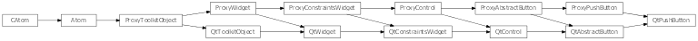
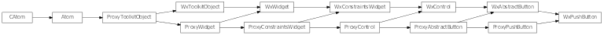

Bases: enaml.widgets.abstract_button.AbstractButton
A button control represented by a standard push button widget.
A reference to the ProxyPushButton object.
Get the menu defined for the PushButton, if any.

Bases: enaml.qt.qt_abstract_button.QtAbstractButton, enaml.widgets.push_button.ProxyPushButton
A Qt implementation of an Enaml ProxyPushButton.
A reference to the widget created by the proxy.
Create the underlying QPushButton widget.
Handle layout initialization for the push button.
Find and return the menu child for this widget.
| Returns: | result (QMenu or None) – The menu defined for this widget, or None if not defined. |
|---|
Handle the child added event for a QtPushButton.
Handle the child removed event for a QtPushButton.

Bases: enaml.wx.wx_abstract_button.WxAbstractButton, enaml.widgets.push_button.ProxyPushButton
A Wx implementation of the Enaml ProxyPushButton.
A reference to the widget created by the proxy.
Create the underlying wxButton widget.
Handle layout initialization for the push button.
Sets whether or not the widget is checkable.
This is not supported on Wx.
Returns the checked state of the widget.
Sets the widget’s checked state with the provided value.